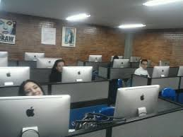
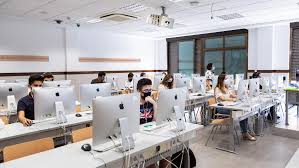

Dedin Ana
| Profesor de informatică Româna, Rusă, Bulgară anadedin16@gmail.com 079997083 |
Mă numesc Dedin Ana. Sunt născută în s. Hîrtop, r-nul Taraclia. Studiile gimnaziale le-am absolvit în satul de baștină. Am continuat studiile de licență la Universitatea de Stat ”B.P.Hasdeu” din Cahul. Tot în aceeași instituție am finisat studiile superioare de master în domeniul Științe ale educației cu programul de studii Tehnologii informaționale de instruire. La moment sunt profesor de informatică și discipline TIC în Colegiul ”Iulia Hasdeu” din Cahul. |
|  |

|
 |
Experiența de lucru
Profesor de matematică și informatică
noiembrie 2006- mai 2007Profesor de matematică și informatică în Gimnaziul ”Constantin Sterea” s. Chircani, mun. Cahul.
Profesor de matematică
noiembrie 2016- aprilie 2017Profesor de matematică în Liceul Teoretic ”Mihai Eminescu” s. Crihana Veche, mun. Cahul.
Profesor de informatică
august 2007- prezentProfesor de informatică și discipline TIC Colegiul ”Iulia Hasdeu” din Cahul.
Educație
Studii de master
august 2015- iunie 2017Studii de master USC Cahul
Studii de licență
august 2002- mai 2007Studii de licență USC Cahul